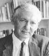

INFORMATION about Michael Woolfson
Information about Michael Woolfson
Prof Michael
Woolfson FRS 1984
- Winner of the 1986 Royal Society Hughes Medal
- BCA President 1988 - 1990 and co-opted to BCA Council
for some following years.
- Winner of the ACA 1990 Paterson award
- Winner of the Dorothy Hodgkin Prize
presented in 1997 at the BCA Annual Meeting in Leeds when he lectured on
From Rock Salt to Viruses
- Paper given at the '50 years of Computing' Conference
'Direct methods 1998 and all that'
- Winner of the IUCr 'Ewald prize' to be presented at the
IUCr Congress in Geneva in 2002
This file last updated 18 Apr 2002
BCA Home page WebMaster
BCA@ISISE.RL.AC.UK
 Click here to return to BCA homepage
Click here to return to BCA homepage